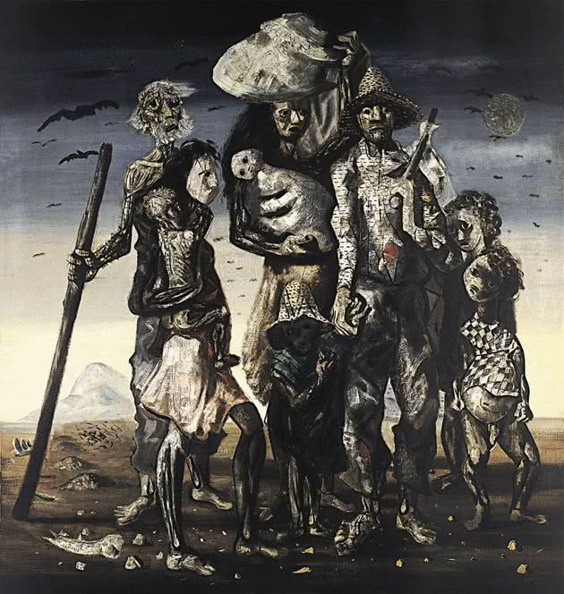

| A arte | |
|---|---|
|
A arte é uma das melhores maneiras do ser humano expressar seus sentimentos e emoções. Ela pode estar representada de diversas maneiras, através da pintura plástica, escultura, cinema, teatro, dança, música, arquitetura, dentre outros. A arte é o reflexo da cultura e da história, considerando os valores estéticos da beleza, do equilíbrio e da harmonia. (Tô aproveitando a imagem mesmo). |
 |
Para voltar clique aqui